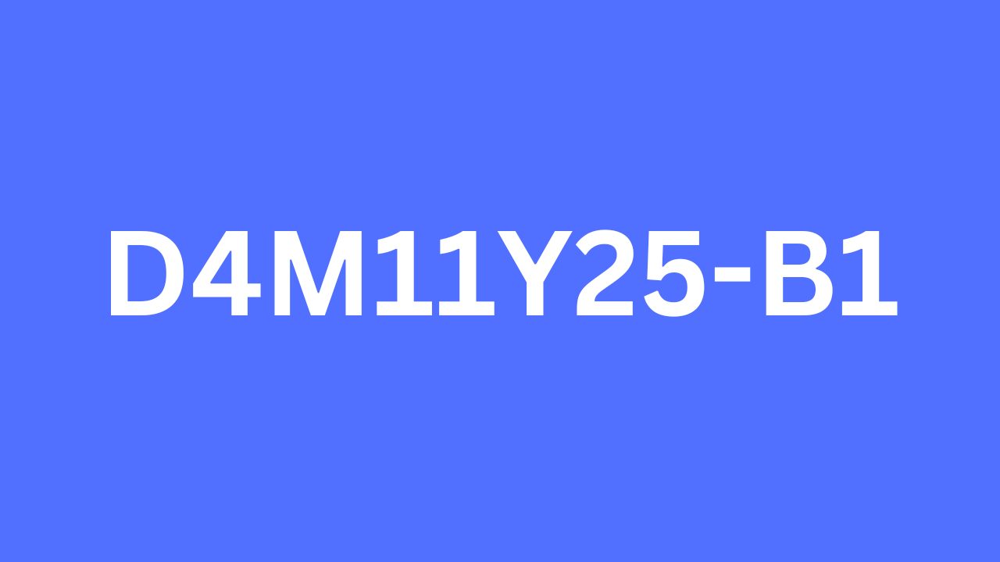

Noutati site
Pe acesta pagina puteti vedea ce sa adaugat nou si ce planific pe vitor pentru site
Cum se citeste versiunea si ce inseamna
Versiunea site-ului pare urat scrisa dar are logica
D30M10Y25-B2 este o formare din D30 data zilei este 30 , M10, luna 10, Y25, anul 2025 , -B2 Inseamna ca e al doilea lucru facut pe acea zi , B vine de la build.
Ce-i nou in D4M11Y25-B1
Am de gand sa adaug mai multe imagini pe site si sal fac mai color si frumos de citit
Cam atat pe acest mic update
Vreau pe vitor sa adaug noi lectii si in plan mai multe imagini eventual ceva desene